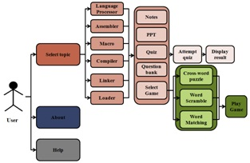

For more information, contact:
1. Mrs. Sunita Milind Dol,
Assistant Professor,
Computer Science and Engineering Department,
E-mail ID : sunita_aher@yahoo.com,
2.Mr. P.S.R.Patnaik,
Assistant Professor,
Computer Science and Engineering Department,
E-mail ID: psrpatnaik@gmail.com
Walchand Institute of Technology, Solapur, Maharashtra
SysPro is an Android Mobile Application for System Programming subject of Third Year of Computer Science and Engineering.
This subject contains six chapters namely
For each chapter, following contents are provided
For each chapter, Games part contains the following chapter related games

Syllabus of System Programming:
SECTION – I
1.Language Processors: Introduction, language processing activities, Fundamentals of language processing, Fundamentals of language processing, Fundamentals of language specification, Language Processor development tools.
2.Assemblers: Elements of assembly language programming, A simple assembly scheme, Pass structure of assemblers, Design of a two pass assembler, A single pass assembler for IBM PC.
3.Macros and Macro Processors: Macro definition and call, Macro Expansion, Nested macro calls, Advanced macro facilities, Design of Macro preprocessor.
SECTION – II
4. Compilers and Interpreters: Aspects of compilation, Compilation of expressions, Static and dynamic memory allocation, Memory allocation in block structured languages, Code optimization, Interpreters
5. Linkers : Relocation and linking concepts, Design of a linker, Self-relocating programs, Linking for verlays.
6. Loaders: Function of loader, General loader scheme, Absolute loader, Relocating loader, Direct linking loader, Dynamic loading, Design of direct linking loader.
References: